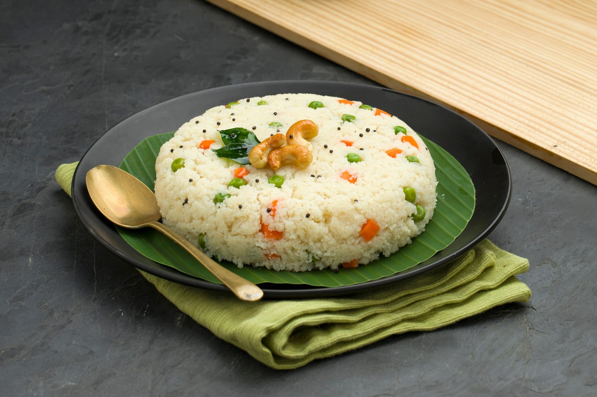

Calorie Intake
513 cal /100gm
Health Benefits
- Here are some of the health benefits of Upma :
- Upma is made with wheat rava and contains a lot of potassium, which is good for your kidneys. It's also packed with healthy vegetables, which means it has a lot of fiber.
- Upma digests slowly and makes you feel full, making it a good option for weight loss.
- The nutrients in upma keep these systems healthy and enhance their functioning.
- Upma contains protein, vitamins, minerals, zinc, phosphorus, iron, and carbs. It's also a good source of protein, dietary fiber, lycopene, beta carotene, copper, and an excellent source of vitamin C, vitamin D, lutein, manganese, and vitamin E.
- Contains antioxidant properties
Receipe
Ingredients
- ⅓ cup finely chopped onions
- 1 teaspoon chopped green chillies
- 1 teaspoon finely chopped ginger/li>
- 2 tablespoons coriander leaves (cilantro)
- 8 to 10 curry leaves
- 10 to 12 cashews(optional)
- 1 teaspoon chana dal (hulled and split bengal gram)
- 1 teaspoon urad dal (hulled and split black gram)
How to make Upma
- Heat a pan or kadai first. Add 1 cup rava or cream of wheat (fine variety).
- Begin to roast the rava. Stir often while roasting the rava.
- The rava or sooji grains should become fragrant and start to look dry, separate and crisp. Don’t brown the rava./li>
- Once the rava becomes fragrant and starts to look dry and crisp, switch off the flame and put the roasted rava on a plate and set aside.
- In a pan, heat 2 tablespoons ghee (clarified butter) or oil. You could use sunflower oil or peanut oil or safflower oil or any neutral tasting oil.
- Lower the heat. Add 1 teaspoon mustard seeds. When you hear the crackling sound of mustard seeds, it means they are getting fried.
- Now add the following ingredients:
½ teaspoon cumin seeds
1 teaspoon chana dal (husked and split bengal gram)
1 teaspoon urad dal (husked and split black gram)
- Stirring often fry until the chana dal and urad dal begin to brown a bit.
- Immediately add 10 to 12 cashews and begin to fry on a low to medium-low heat.
- By the time the cashews get golden the dals should also be golden.
- Now add the ⅓ cup of finely chopped onions.
- Sauté the onions until they soften and become translucent on a low to medium-low heat.
- Then add 1 teaspoon chopped green chillies, 1 teaspoon chopped ginger and 8 to 10 curry leaves.
You can also add 1 dried red chilli (halved and with seeds removed) at this step.
- Mix well and sauté for a few seconds.
- Boil water and Then add 2.5 cups water to this mixture.
- Then add 1 teaspoon sugar.
Sugar is optional and you can skip it. We prefer a slight sweet taste in the upma and hence we add it.
sugar being added
19. Stir again. On a medium to high flame, heat the water and let it come to a rolling boiling.
water has come to a rolling boil
Make Rava Upma
20. When the water comes to a rolling boil, lower the flame to its lowest. Then add the rava in 4 to 5 batches with a spoon.
adding rava with a spoon to make upma recipe
21. Once you add the first batch of rava, stir and mix immediately so that the roasted rava gets mixed evenly with the water.
mixing rava with a spatula
22. Then add the next batch of rava. Mix and stir again very well ensuring that the batch of rava is mixed evenly in water.
second batch of rava added
23. Continue to add and stir the rava up to the last batch.
last batch being of rava being added
24. Quickly stir and mix very well. The rava grains will absorb water, swell and get cooked.
mixing everything very well
25. Cover and allow the rava upma to steam for 2 to 3 minutes on a low heat.
pan covered with glass lid for steaming the upma
26. Then turn off the heat. In the below photo, the rava is cooked well and the suji ka upma is ready.
upma done and cooked well
27. Lastly add about 2 tablespoons chopped coriander leaves (cilantro). You can add more coriander leaves if you like.
coriander leaves added on rava upma
28. Mix again.
coriander leaves mixed with upma